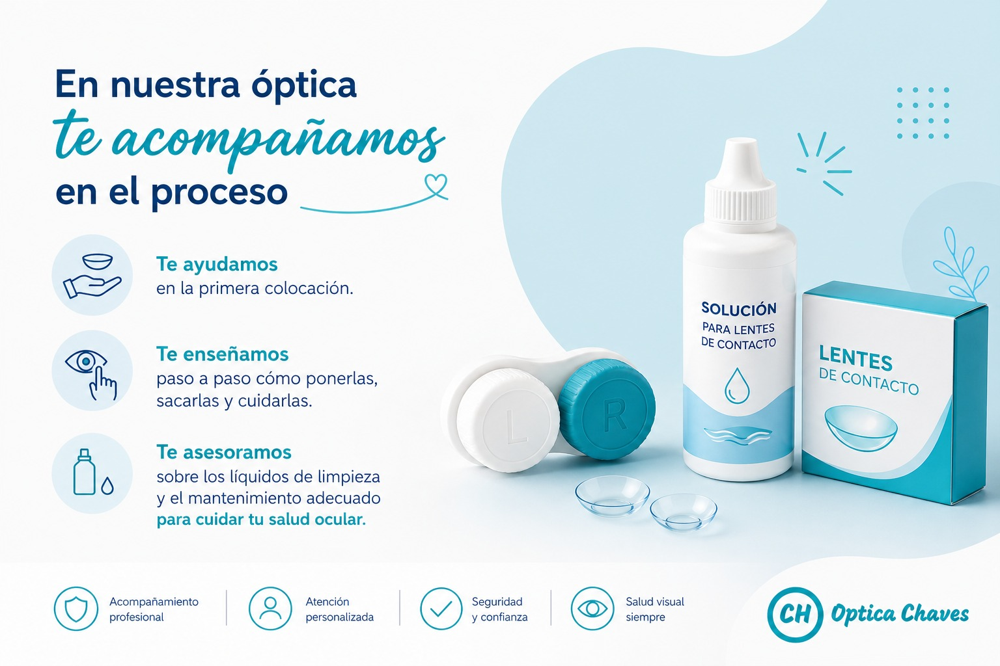

Lentes de contacto, todo lo que tenés que saber!
Cumplen la misma función que los anteojos: corrigen problemas de visión refractivos como la miopía, hipermetropía, astigmatismo y presbicia, pero con la libertad de un campo visual completo.
Tipos de lentes de contacto
1 - Lentes de contacto blandas
Están formadas en gran parte por agua, lo que las hace delgadas, cómodas y de rápida adaptación.
- Descartables: opciones mensuales o programadas.
- Anuales: diseñadas a medida para cada usuario.
2 - Lentes de contacto rígidas
Fabricadas con materiales de alta permeabilidad. Son ideales para graduaciones altas y tratamiento de queratocono.
Su duración puede ser de 1 a 2 años según el uso.